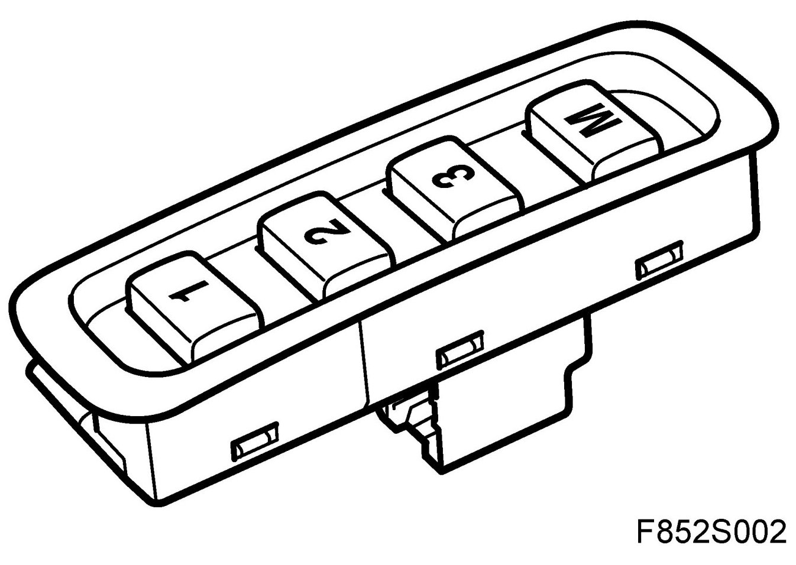
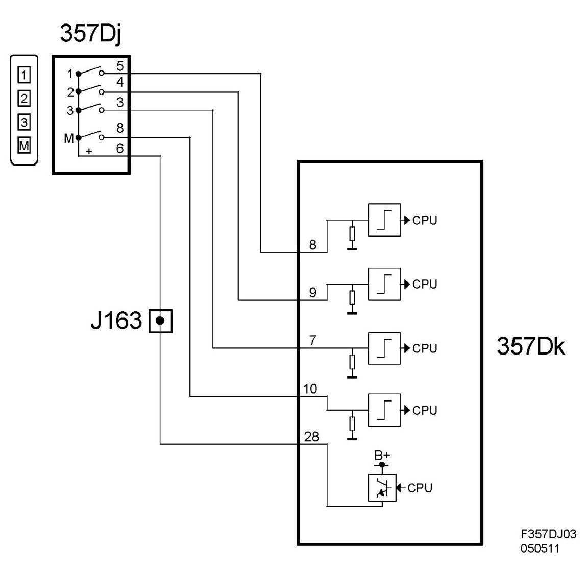
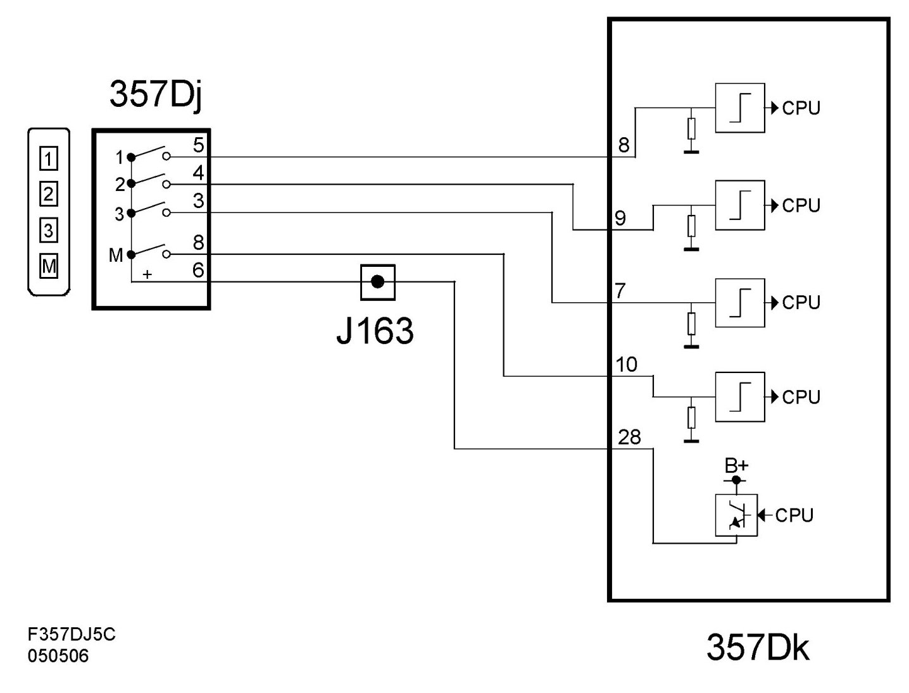

Memory Switch, Electrically Operated Driver's Seat With Memory (357DJ)
Memory Switch, Electrically Operated Driver's Seat With Memory (357Dj)
Location
Memory switch, electrically operated driver's seat with memory (357Dj).

Main task
Allows the driver to use the memory functions for the seat and door mirrors.
Type
The switch unit comprises four single-pole switches.
Connect
The switch unit is powered with B+ from the seat control module (357Dk) pin 28. When a switch closes, B+ is fed back to the corresponding switch input on the control module. The voltage then changes from 0V to B+.
Diagram 4D/5D

Diagram CV
